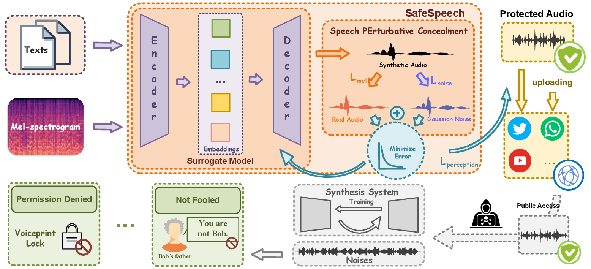

SafeSpeech:
Robust and Universal Voice Protection Against Malicious Speech Synthesis
[Paper][GitHub]
Zhisheng Zhang, Derui Wang, Qianyi Yang, Pengyang Huang, Junhan Pu, Yuxin Cao, Kai Ye, Jie Hao, Yixian Yang
Abstract: Speech synthesis technology has brought great convenience, while the widespread usage of realistic deepfake audio has triggered hazards. Malicious adversaries may unauthorizedly collect victims' speeches and clone a similar voice for illegal exploitation (e.g., telecom fraud). However, the existing defense methods cannot effectively prevent deepfake exploitation and are vulnerable to robust training techniques. Therefore, a more effective and robust data protection method is urgently needed. In response, we propose a defensive framework, SafeSpeech, which protects the users' audio before uploading by embedding imperceptible perturbations on original speeches to prevent high-quality synthetic speech. In SafeSpeech, we devise a robust and universal proactive protection technique, Speech PErturbative Concealment (SPEC), that leverages a surrogate model to generate universally applicable perturbation for generative synthetic models. Moreover, we optimize the human perception of embedded perturbation in terms of time and frequency domains. To evaluate our method comprehensively, we conduct extensive experiments across advanced models and datasets, both subjectively and objectively. Our experimental results demonstrate that SafeSpeech achieves state-of-the-art (SOTA) voice protection effectiveness and transferability and is highly robust against advanced adaptive adversaries. Moreover, SafeSpeech has real-time capability in real-world tests. The source code is available at https://github.com/wxzyd123/SafeSpeech.
Contents
SafeSpeech Workflow

Figure 1. The SafeSpeech safeguards voice by constructing a surrogate TTS model that minimizes the designed objectives (L_mel and L_noise with perception constraint L_perception detailed in Section 4). Despite attackers fine-tuning advanced TTS models from social platforms, they cannot produce high-quality synthetic speech to circumvent voiceprint locks or deceive victims' families.
Original and Protected Speech
These samples are undefended and protected samples from LibriTTS dataset of speaker 5339, respectively.
| Method | Sample 1 | Sample 2 | Sample 3 | |
|---|---|---|---|---|
| Original | ||||
| Protected | random noise | |||
| AdvPoison | ||||
| SEP | ||||
| PTA | ||||
| AttackVC | ||||
| AntiFake | ||||
| SafeSpeech | ||||
| denoised |
Synthesized Speech based on Fine-tuning
BERT-VITS2
| Method | Sample 1 | Sample 2 | Sample 3 |
|---|---|---|---|
| clean | |||
| random-noise | |||
| AdvPoison | |||
| SEP | |||
| PTA | |||
| AntiFake | |||
| AttackVC | |||
| SafeSpeech |
Other Models with Fine-tuning Capabilities
| Models | Method | Sample 1 | Sample 2 |
|---|---|---|---|
| StyleTTS 2 | clean | ||
| SafeSpeech | |||
| MB-iSTFT-VITS | clean | ||
| SafeSpeech | |||
| VITS | clean | ||
| SafeSpeech | |||
| GlowTTS | clean | ||
| SafeSpeech |
Synthesized Speech based on Zero-shot
These are synthesized speech from advanced zero-shot TTS models.
| Models | Method | Sample 1 | Sample 2 |
|---|---|---|---|
| Original | |||
| TorToise-TTS | clean | ||
| SafeSpeech | |||
| XTTS | clean | ||
| SafeSpeech | |||
| OpenVoice | clean | ||
| SafeSpeech | |||
| FishSpeech | clean | ||
| SafeSpeech | |||
| F5-TTS | clean | ||
| SafeSpeech |